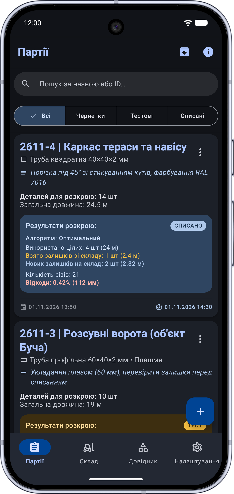
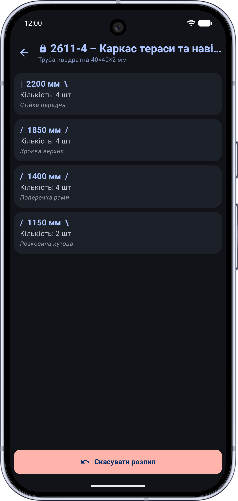
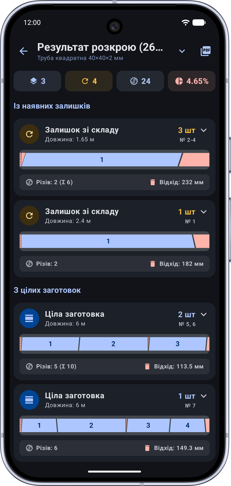
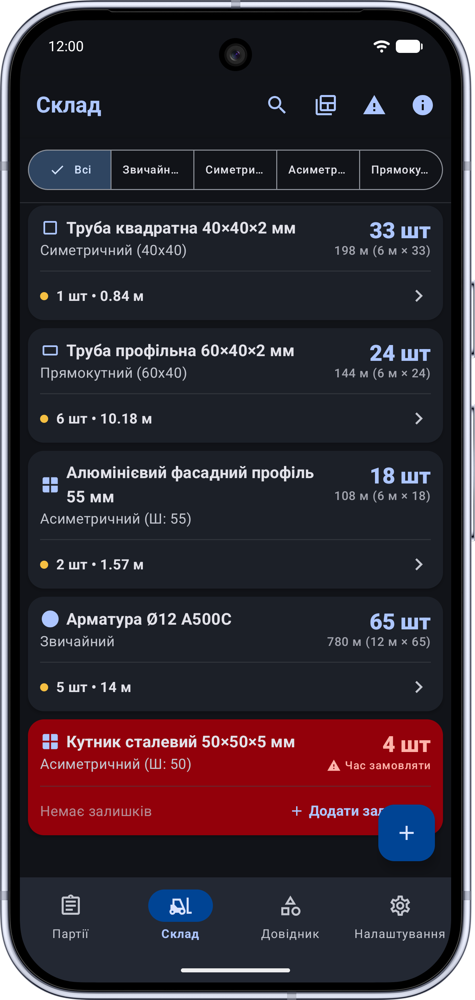

Мінімум обрізків —
максимум економії матеріалу.
Розпил ПВХ та алюмінієвого профілю, круглих і профільних труб, дошки, арматури або кабель-каналів. Введіть розміри заготовок, вкажіть товщину різу пили (керф) — алгоритм побудує найекономнішу карту порізки за лічені секунди.

Очікується скріншот:assets/linear-cutting/screen-main-uk.png
Чому розкрій «на око» або на папері веде до збитків
Вартість металу, ПВХ-профілю та якісної деревини постійно зростає. Кожен зайвий залишок менше метра — це заморожені або викинуті гроші.
- • Забутий різ диска: не врахували 3–4 мм товщини пильного диска — і остання деталь у палці виходить бракованою.
- • Купи непотрібних залишків: склад завалений шматками по 60–80 см, які вже нікуди не підходять, а нові палиці ріжуться знову.
- • Плутанина біля пили: пиляр на виробництві витрачає 20 хвилин на підбір комбінацій замість безперервної роботи.
- • Математичне пакування: алгоритм підбирає комбінації так, щоб сумарний залишок був мінімально можливим.
- • Чесний облік різу (Керф): товщина пропилу додається до кожного різу автоматично, усуваючи ризик браку.
- • Пуск залишків у діло: спочатку розкрій рахується на наявних обрізках зі складу, і лише потім — на нових хлистах.
Інженерний інструмент прямо в цеху
Точна товщина пропилу (Керф)
Вказуйте будь-яку товщину диска пили чи різака (наприклад, 2.5 мм, 3.2 мм чи 4 мм). Кожен різ розраховується з міліметровою точністю.
Склад ділових залишків
Додавайте вже наявні відрізки різної довжини. Програма спочатку пустить у роботу їх, зменшуючи захаращення цеху.
Наочна карта порізки
Чітка візуальна схема для кожної вихідної палиці: послідовність різів, розміри деталей та підсвічування корисного залишку або сміття.
Миттєвий розрахунок
Швидкий алгоритм оптимізації обробляє десятки деталей і довжин за частки секунди навіть на бюджетних смартфонах.
100% Автономна робота (Офлайн)
Працює в металевих цехах, ангарах, гаражах та на виїзних монтажах без мобільного зв'язку чи Wi-Fi.
Повна конфіденційність
Ніяких реєстрацій, обов'язкових акаунтів чи збору технологічних карт. Усі ваші специфікації залишаються лише у телефоні.
Інтерфейс, адаптований під роботу в рукавицях
Великі кнопки введення, контрастна колірна схема та читабельні цифри на відстані витягнутої руки.

screen-input-uk.pngВведення заготовок і довжин
Введення заготовок і деталей

screen-layout-uk.pngВізуальна карта порізки
Візуальна карта порізки

screen-stats-uk.pngЗвіт про відходи та залишки
Звіт про залишки та відходи
Часті запитання
Для яких матеріалів підходить Linear Cutting?
Для будь-яких погонних (лінійних) матеріалів: віконний ПВХ-профіль, алюмінієві системи, сталеві круглі та профільні труби, арматура, дерев'яний брус, дошка, кабельні лотки, плінтус та карнизи.
Чому важливо вказувати товщину різу (керф)?
Пильний диск або абразивний круг перетворює 2.5–4 мм матеріалу на стружку під час кожного розпилу. Якщо зробити 10 різів на 6-метровій палці без урахування керфу, сумарна похибка сягне 30–40 мм, і кінцева деталь не вийде в потрібний розмір. Linear Cutting компенсує це автоматично.
Чи потрібен інтернет для оптимізації розкрою?
Ні. Додаток розроблено для автономної роботи в цехах і на об'єктах. Усі математичні алгоритми виконуються локально на процесорі вашого смартфона.
Припиніть викидати гроші в обрізки
Встановіть Linear Cutting безкоштовно та почніть економити матеріал вже на найближчому замовленні.